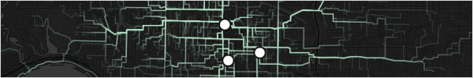

Linear Heatmaps of Home-Campus Trips in the Toronto Region
2016-10
I built an interactive map built to visually explore and analyze the commuting patterns of post-secondary students in the Greater Toronto Area (GTA).
https://sausy-lab.github.io/SMTO_web_map/
The map conveys the spatial distribution of students for each campus, the scalar variations of different travel modes, and identifies critical travel routes. It can be queried to show trips to each of the seven campuses in the region and for different travel modes. Adjacent to the map are descriptive statistics of mode share, average travel times, and listings of the most travelled routes.
The map was built with open data and open source software (OpenTripPlanner, QGIS, PostGIS, & Mapbox). The following text briefly outlines some of the technical steps of how this map was built.
Data Sources & Preparation
Data data data. There were three categories of data used to create this map:
1 - OpenStreetMap
For creating a street network graph and background cartography.
OpenStreetMap data for the Toronto region can be downloaded via ...
wget http://overpass-api.de/api/map?bbox=-80.9,43.0,-77.9,44.52 - GTFS
General Transit Feed Specification (GTFS) data for creating adding transit to network graphs. GTFS is essentially a set of relational .csv tables including stop locations, stop times, route geometries, and trip schedules.
GTFS data was acquired from the following Toronto area transit agencies:
- Toronto Transit Commission
- GO Transit
- Durham Region Transit
- York Region Transit / Viva
- MiWay (Mississauga)
- Brampton Transit / Zum
- Oakville Transit
- Burlington Transit
- Hamilton Street Railway
3 - StudentMoveTO
The home locations, main campus, typical travel mode, and trip frequencies of post-secondary students were acquired from the 2015 StudentMoveTO survey. More about the StudentMoveTO dataset can be found here: http://www.studentmoveto.ca/
The publicly available dataset does not include the specific location of where students live because of privacy. However, exact coordinates are needed to generate a route between origin and destination points on a network graph. So these coordinates were estimated using a random number generator and a weighted probability function. The output of this function is more likely to return a point in sub-census areas (census blocks) that have a higher population than those that have a lower population. Here's how this was coded in Python and postgres via psycopg2:
# connect cursor to database
cur = conn.cursor()
#
# get population of input census tract
cur.execute("SELECT ctpop FROM c2011_ct WHERE ctuid = CAST(%s as text);" %CT_in)
ct_pop = cur.fetchone()
ct_pop = ct_pop[0]
#
# grab list of all census blocks that are in that census tract
db_list = []
cur.execute("SELECT dbuid, dbpop FROM c2011_block WHERE ctuid = CAST(%s as text);" %CT_in)
for record in cur:
db_list.append([record[0],record[1]])
#
# generate a random number such that 0 < r < ct_pop
r = random.random() * ct_pop
#
# loop over block list and return block that has r in its pop range
c = 0
for block in db_list:
block.append(c)
c = c + block[1]
block.append(c)
if r >= block[2] and r <= block[3]:
out_block = block[0]
break
#
# generate a random point within this block
cur.execute("SELECT ST_AsGeoJSON(randompointsinpolygon(geom, 1)) FROM c2011_block WHERE dbuid = CAST(%s as text);" %out_block)
# parse the geojson to get x and y coordinates
t = ((cur.fetchone()[0]).split('[')[1]).split(',')
x = t[0]
y = (t[1].split(',')[0]).split(']')[0]
print x,yRouting on Multi-Modal Network Graphs
Network graphs were built in order to estimate the travel paths that student's are most likely to take from their homes to their campuses. Network graphs were built with OpenTripPlanner, an open source routing engine written in Java, which be scripted with Python. The graph was built using OSM and GTFS data as inputs. It was stored on a local server which could return itineraries via custom requests. These requests were scripted with Python to input the origin (student's home coordinates), destination (campus coordinates), and travel mode of each student. This snippet is for a single origin-destination request:
import requests
url_string = "http://localhost:8080/otp/routers/default/plan?fromPlace=" + str(origin_lat) + "%2C" + str(origin_lon) + "&toPlace=" + str(destination_lat) + "%2C" + str(destination_lon) + "&time=8:00am&date=07-20-2016&mode=" + mode + "&maxWalkDistance=999999&arriveBy=false&wheelchair=false&locale=en"
page = requests.get(url_string)The output page is a json object which can be parsed to grab the route geometry and other itinerary attributes.
import json
import polyline
trip_data = json.loads(page.content)
# grabbing attribute data:
# --------------------------------
trip_duration = trip_data['plan']['itineraries'][0]['duration']
walk_distance = trip_data['plan']['itineraries'][0]['walkDistance']
# grabbing route geometry:
# --------------------------------
leg_count = len(trip_data['plan']['itineraries'][0]['legs'])
l = 0
line_coords = []
while l < leg_count:
points = trip_data['plan']['itineraries'][0]['legs'][l]['legGeometry']['points']
line_geom = polyline.decode(points)
line_coords = line_coords + line_geom
l += 1The Polyline library (https://pypi.python.org/pypi/polyline/) converts the line geometry from Google’s encoded polyline algorithm format (http://goo.gl/PvXf8Y) into a Pythonic list. This is then stored in a dictionary and outputted as a .geojson file.
A more complete version of the code which loops over all the survey respondents in the StudentMoveTO dataset can be found here: https://github.com/SAUSy-Lab/OpenTripPlanner_analysis/blob/master/grab_route_geom.py
Web Cartography & Data Visualization
The map interface was written in HTML, CSS, and Javascript using APIs from Mapbox. The dark background map was styled using Mapbox Studio. The route geometries were converted from geojson into vector tilesets for faster display. The route geometries were also simplified in order to appear at smaller scales. These were simplified in QGIS using "Simplify Geometry" under Vector/Geometry Tools and then added as a separate vector tileset. The point locations for the seven campuses are held in geojson. The widths of lines and points are styled as a function of their zoom levels. The transparency of each line is weighted by campus, mode, and how often the student travels to campus during the week in order to highlight routes that are more travelled than others (i.e. if a student travels more often, the line becomes more visible).
Buttons for querying the map for travel mode and campuses were implemented using Mapbox GL JS filters:
HTML:
<div onclick='campus_switch("UTSC")' id='UTSC'><p>UTSC</p></div>
<!-- where UTSC is the name of one of the seven campuses -->JavaScript:
function campus_switch(campus_button) {
// ....
// e.g. filter to only show the campus == campus_button
filter = ["==", "campus", campus_button]
map.setFilter('routes',filter);
// ....
}The values on the bar charts were computed in R using the StudentMoveTO dataset and routing outputs. The widths of these charts were set in same functions as the map filters:
function campus_switch(campus_button) {
// ....
// for example:
avg_travel_time = 60 // minutes
document.getElementById('avg_travel_time_bar').style.width = String(Math.floor(avg_travel_time * 3.3333333)) + 'px';
// for a 100px : 30 minutes ratio
// ....
}